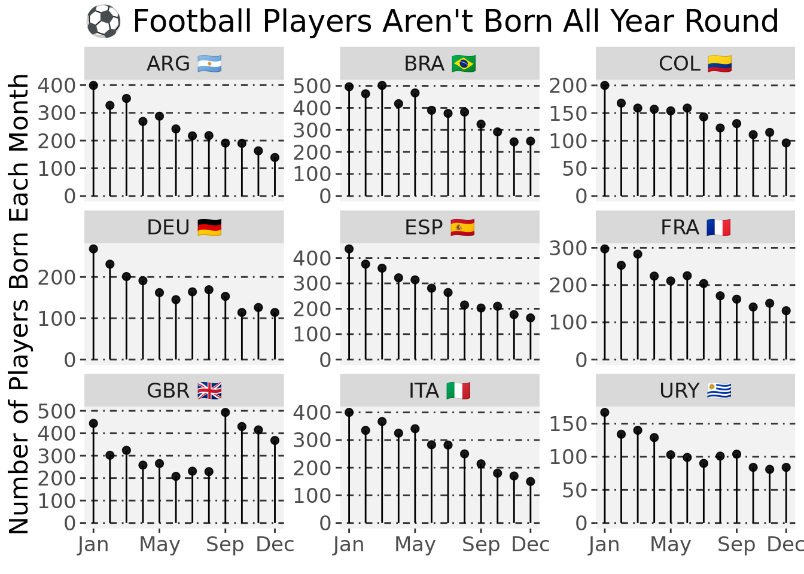
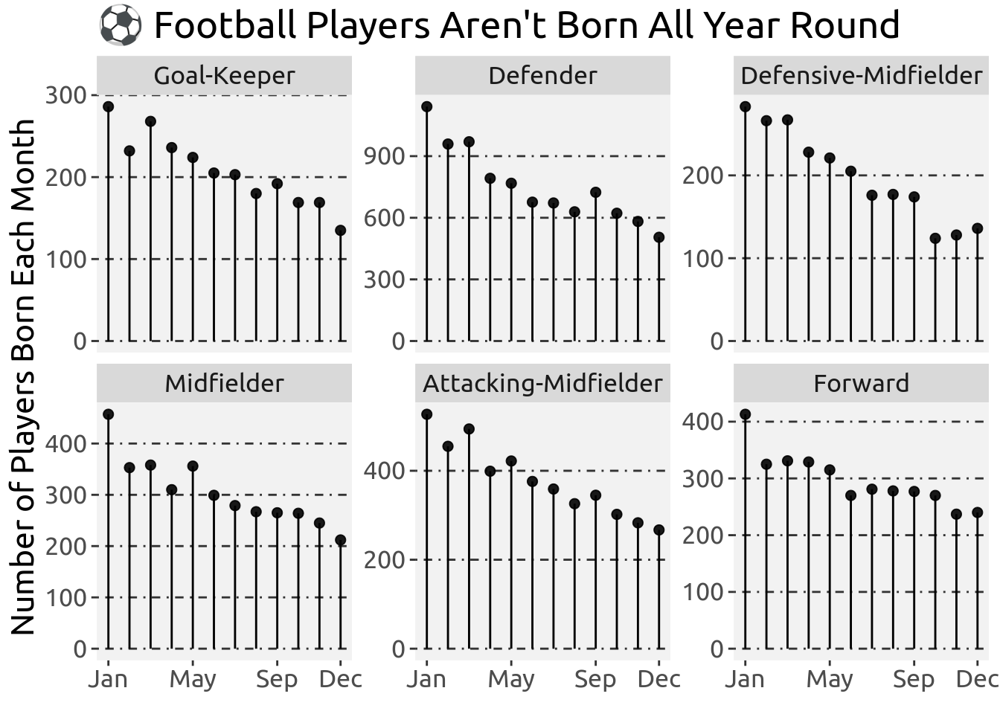
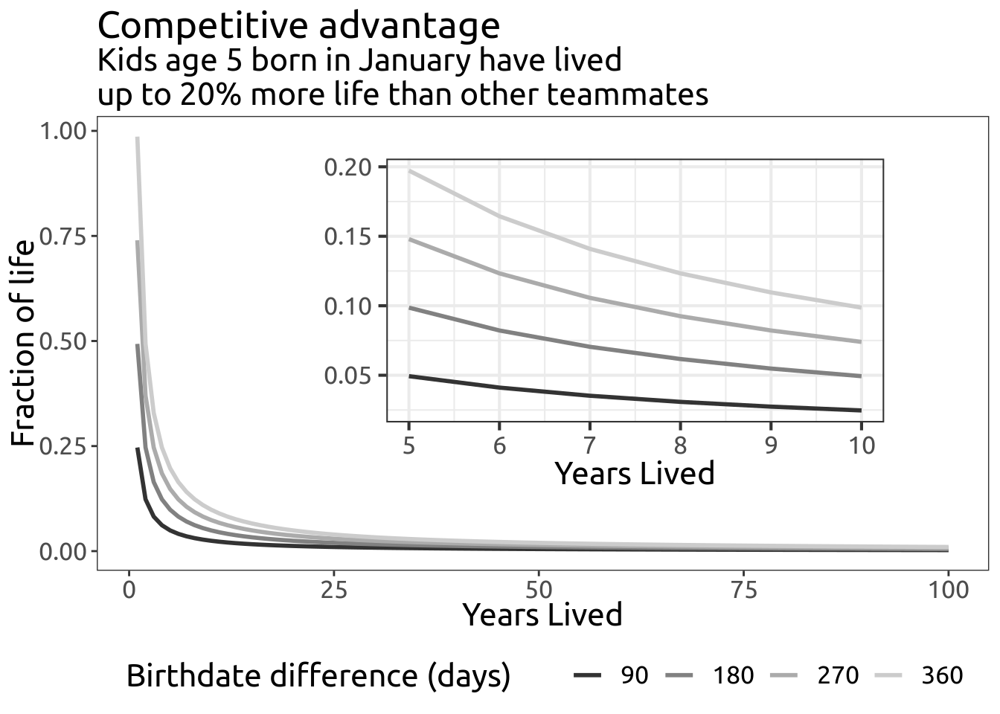
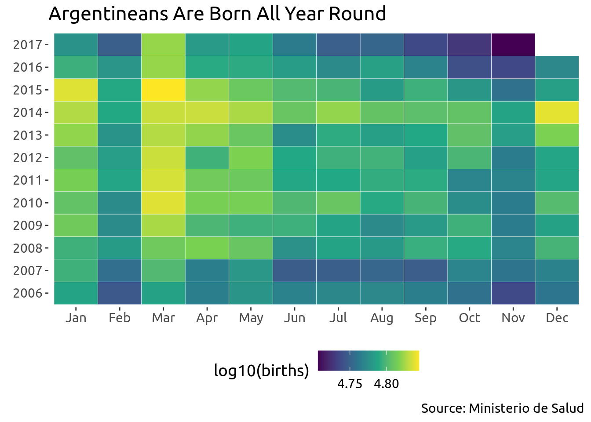

![]()
| Country | Football Players (n) | |
|---|---|---|
| Brazil | 4606 | |
| United Kingdom1 | 3967 | |
| Spain | 3322 | |
| Italy | 3297 | |
| Argentina | 2995 | |
| France | 2453 | |
| Germany | 2038 | |
| Colombia | 1716 | |
| Uruguay | 1316 | |
| 1 The data for the United Kingdom only comes from England. | ||
Total number of players per country.
May 9, 2019
We believe in meritocracy as one of the cornerstones of Western civilization. This idea is so embedded in our culture that we seldom question it. We praise those driven individuals who combine effort and talent to make it to the top. They smile in the cover of the magazines, the dreams of children and the nightmares of adults. Sports might be the activity where the blood, sweat and tears feel the most real and therefore are most notoriously broadcasted to the world.
The beautiful game is no exception. But what if we were wrong about the meritocracy assumption? What if there were random events that sneak in the player selection process? What if such events were not negligible, but heavily influenced what players that make it to the top?
Three or four months of difference at 25 year old is nothing1. Moreover, for most purposes in adult life, such a small difference in age is considered zero. But elite athletes are not ordinary adults and we don’t care about most of their purposes in life. We want them to do one thing extraordinarily well.
What could a trimester difference do to a 25 year old, prime time, football player? You might still find yourself asking this question and this question might sound reasonable. But the data looks quite different. Let’s take a look.
I compiled a small database of football players from www.soccerwiki.com. This database is not perfectly complete, but contains enough players to provide support to the general idea. Here’s a table of the number of players by country:
| Country | Football Players (n) | |
|---|---|---|
| Brazil | 4606 | |
| United Kingdom1 | 3967 | |
| Spain | 3322 | |
| Italy | 3297 | |
| Argentina | 2995 | |
| France | 2453 | |
| Germany | 2038 | |
| Colombia | 1716 | |
| Uruguay | 1316 | |
| 1 The data for the United Kingdom only comes from England. | ||
Total number of players per country.
Here’s a month by month representation of the number of players born in each country.

This looks quite strange, there’s a clear trend, with most players being born in the first months of the year. Maybe it’s a seasonal thing?
Well…It’s quite difficult to support the idea that players born on any season are better. For example, January in Brazil means blazing hot summer while it’s freezing cold winter in Germany. Still, both countries seem to produce the most number of players in the first month of the year. In fact, the data show that being born on the first trimester after the cutoff date (e.g, January to March if cutoff is January 1st) increases the chances of being a top player by a huge margin.
There might be some logic behind this phenomenon. Maybe the birth effect is big for positions most strongly associated with bare physical strength. Thus, we could expect to find a stronger effect for those in defensive positions (i.e, Goalkeeper up to Defensive Midfielders) and find a broader distribution of birth dates for those positions that are reserved for the creatives and magicians of the ball, the offensive players.

Again, the evidence for a strong bias favoring players born on the first trimester is compelling. What’s going on here?
This is not a post about how the top athletes distinguish themselves from the rest because of their talent and effort. This post is about something completely out of their control: their birth dates. Yes, it sounds crazy, but the month of birth plays a huge role in the success of a football player.
Football schools around the world are normally organized around the calendar year. It makes sense, if you are going to make a tournament for kids, instead of having kids of different ages competing together, you grab all the kids born on a same year and make them play against each other (5 year-old kids vs other 5 year-old kids). For example, when I was playing these tournaments, I played in the 1991 category.
Scouts and coaches might decide to promote a strong/talented kid. In my case, I could play for the 1990 or 1989 categories. But we all agree that it would be unfair to downgrade me to play for the 1995 category. I would have a huge developmental advantage. So far so good, but there’s something that escapes from everyone: one year is a lot of time. The developmental difference between a 5 year old kid born at the beginning of the year (e.g, January 1st) vs one at the very end (e.g, December 31st) is huge.
Let’s take a less extreme case, kids born with a 180 days difference. That amount of days corresponds to an extra fraction of life lived (aka experience, aka time kicking the ball) of 0.1. It might sound like very little but that 10% advantage will definitely compound over the competitive career.

It turns out to be that scouts and coaches think they are selecting the best, but they are selecting the oldest. The January 1st cutoff is arbitrary and favors those born close to the date, who will be slightly stronger/faster/better only because they have had more time to play around in the world and, basically, grow. If you look closely, the only country that does not follow the pattern is the UK. But, yes, you guessed it, the cutoff date for the UK is August 31st.
Players that are selected as the best normally play in the starting team and stay in the field more minutes each game [Experience based, Citation needed]. They get better training and more opportunities to play, either because they play more or because coaches pay more attention to them. Each extra minute reinforces the small initial difference, creating a real one. Of course, talent and effort play a role. But it consistently turns out to be that players born earlier on the calendar year end up being better than the other players. This phenomenon is known as relative age effect 2.
Whenever we see skewed age distributions we should suspect it is likely due to arbitrary cuts. The magic ingredients go like this:
This is difficult to detect because it’s a self-fulfilled profecy for scouts (after all, they want their picks to end up being good). Basketball doesn’t have this kind of problem, mostly because availability of opportunities to train and the absence of strict cutoff dates. But in other sports, this effect is even more marked. In ice hockey, you are mostly constrained to the winter season to play and you need a rink, which puts more barriers on training3.
I couldn’t scrape enough to make a case about market value. But a quick Google search lead me to a paper suggesting that, although month of birth has a big effect in the frequency of players, once the pros made it, their salaries are not related to such factor 4.
This effect transcends beyond sports. Turns out that arbitrary cutoffs during development affect academic performance. Kids born near the cutoff perform better at school and go to better universities. I cannot stop thinking that I was somewhat fortunate in this account. Overall, school never felt like too difficult. But maybe it’s because I had had enough days on earth and was mature enough to grasp concepts. Maybe it’s not only that “Math and Science came easy to me and I liked them”. Maybe I was born at the correct moment and I wouldn’t be pursuing academic endeavors if I hadn’t been born around the cutoff date in my country (July 1st).
Dividing school kids by age is retrograde. I would like to see a continuous progress with no boundaries on dates. I would like to see no kid be made to wait because he isn’t old enough yet and, more importantly, I would like to see no hurrying kids through content because their age says so. I would like to see people moving through school at their own pace5. Maybe we should start looking at performance adjusted by age, it might be the antidote we are looking for.
We can account for this effect and attempt to correct it! Some countries have started to make adjustments to the birth effect in football. An easy way of doing it is using two cutoff dates and training coaches (and scouts) against their bias.
Solving this issue might require clubs to have two teams per year. This measure doesn’t have to go all the way until they are pro, but at least until kids are old enough, so that we keep below the 6-8 month difference. This will possibly increase the costs for everyone and makes logistics more difficult. However, we would see a huge increase in the production of players (and/or their quality) if we just change this arbitrary dates.
There’s a possible hypothesis I’ve been evading. The reasoning will be like this:
If both things were true, then that explains why we see a peak of players in January (or whatever the specific month of cutoff date is). I will use data from my country to show that births do not follow Football.
My country is well known for the production and exportation of football players. I had access to data on births in Buenos Aires. I later gained access to the data for the whole country, which showed mostly the same trend (you can see it at the very bottom of the article). The number of births in Argentina are somewhat constant. If anything, March seems to be the month with most consistent high amount of births.
Births in Argentina

It’s actually 1.32 % of life.↩︎
Great general info here https://en.wikipedia.org/wiki/Relative_age_effect↩︎
I cannot help but relate this with Science. Limited resources, too many hands trying to pull a piece to themselves… add on some age effect, differential training/opportunities (quite often bought with money and good connections). We are probably loosing so many great minds.↩︎
Salman Kahn expresses it way better than I could ever do in his TED talk.↩︎
@online{andina2019,
author = {Andina, Matias},
title = {Birthday {Meritocracy}},
date = {2019-05-09},
url = {https://mauribo2.github.io/WebSite/posts/2019-05-09-Birthday-Meritocracy/},
langid = {en}
}
I'm so glad you're here. As you know, I create a blend of fiction, non-fiction, open-source software, and generative art - all of which I provide for free.
Creating quality content takes a lot of time and effort, and your support would mean the world to me. It would empower me to continue sharing my work and keep everything accessible for everyone.
There easy ways to contribute. You can buy me coffee, become a patron on Patreon, or make a donation via PayPal. Every bit helps to keep the creative juices flowing.
Not in a position to contribute financially? No problem! Sharing my work with others also goes a long way. You can use the following links to share this post on your social media.
Please note that some of the links above might be affiliate links. At no additional cost to you, I will earn a commission if you decide to make a purchase.
© CC-By Matias Andina, 2023 | This page is built with ❤️ and Quarto.